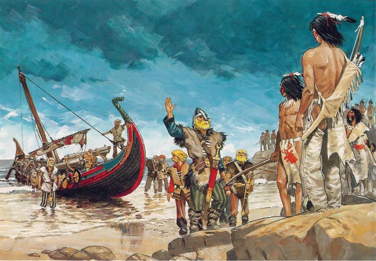

Викинги пересекли Атлантический океан и какое-то время прожили на острове Ньюфаундленд, на несколько столетий опередив Колумба с открытием Америки.
Около 867г они колонизовали Исландию.
В конце 10-го века они сумели доплыть аж до берегов Северной Америки, назвав этот континент Винланд, однако осесть здесь им не удалось.
В 10 веке они основали государство на севере Франции – Норманнское герцогство.
Их корабли покорили Днепр, который был главной водной артерией в Восточной Европе. Там они оказали существенное влияние на развитие Киевской Руси, в основном служили наемной армией.
Еще с 8 века викинги начали активно грабить восточные регионы Англии, где и создали свое государство, которое получило название Денло.
Около 980 года норманны впервые добираются до острова Гренландия. Тогда Эрика Рыжего было изгнано из Исландии, и в 981 году он отправился покорять Атлантику. В 982 году он достиг берегов Гренландии и был поражен ее зелеными пастбищами, там он провел зиму. В 984 году он должен был вернуться в Исландию, после чего вновь собрав силы, отправился в новое путешествие.
